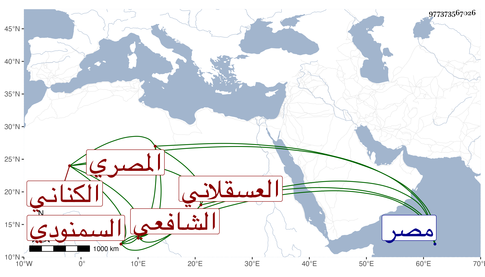

0902Sakhawi.DawLamic.ITO20230111-ara1.EIS1600.977373567026
Biography ID: 977373567026
399
محمد بن محمد بن علي بن محمد بن عيسى بن عمر بن أبي بكر ناصر الدين ابن الشمس الكناني العسقلاني الأصل السمنودي ثم المصري الشافعي سبط البهاء ابن عقيل والماضي أبوه ويعرف كهوبا بن القطان. ولد سنة سبعين وسبعمائة بمصر ونشأ بها فحفظ المنهاج والكافية الشافية وغيرهما وتفقه بأبيه ولازمه حتى برع وكذا أخذ عن غيره وناب في القضاء عن الجلال البلقيني وكان بديع الجمال . مات سنة إحدى وعشرين . أفادنيه البدر ابن أخيه .
